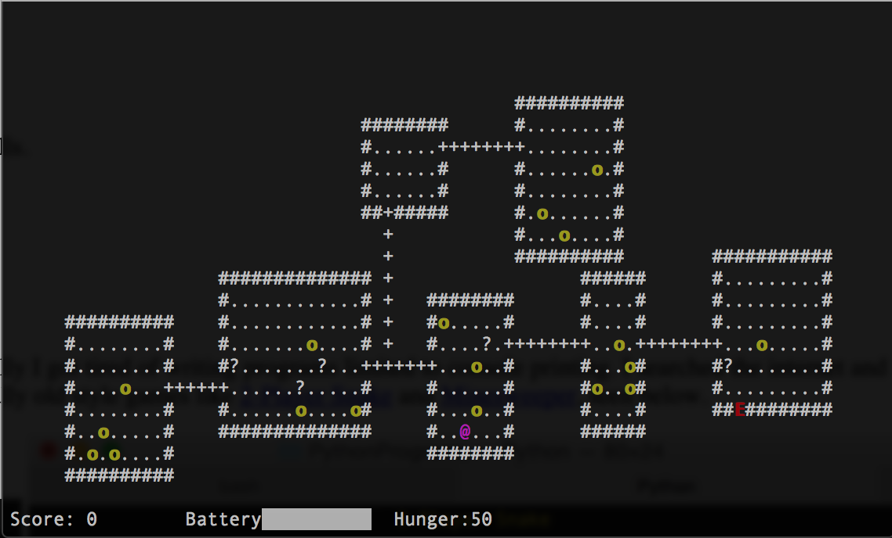
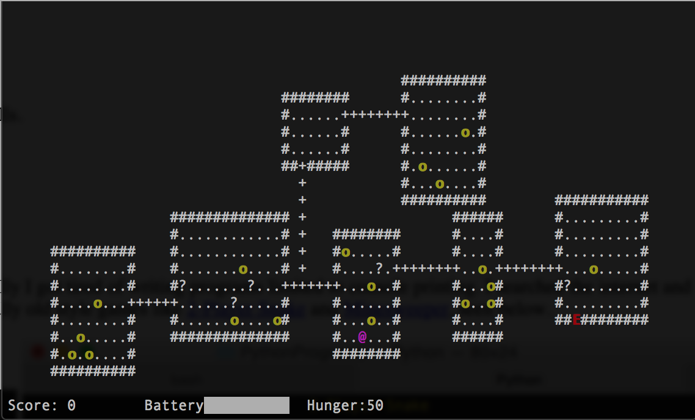
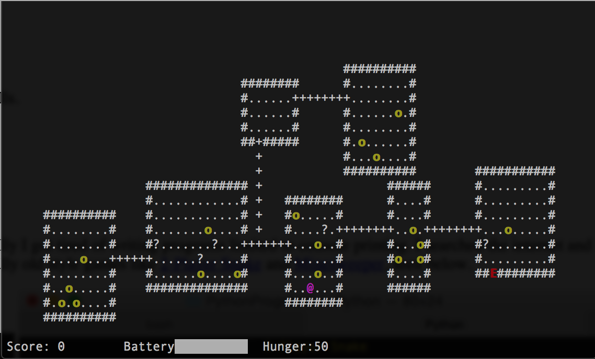

I started with python. Project Euler is a great website that helped me develop these skills.
Here's my friend key:
388978_47acdf4eef38c36764df516d4e2e74c2

When I first used python, 99% of what I learned came from YouTube videos. Eventually I got tired of writing programs limited to console printing. I searched the internet and discovered python's curses module. The curses module can turn your Unix terminal into a text-based GUI, and let me make really old style games like 2-Player Snake and Minesweeper, seen below. I also made my own original roguelike game with random dungeon generation.

It only has a tiny fraction of the types of features one would get from the full version of pyware, but I'm still proud to put my name on what I have created so far. Also, the layout for the background is exactly in line with NCAA regulations, meaning there is no "secret hash" of which many drum corps performers are painfully aware.
Inspired from my drum corps seat partner, I used github pages to create an in-browser game. Here's my friend's version of Go Fish. Originally, I also used jQuery to make my first version of minesweeper functional, but my version of minesweeper which is currently on this site is running on plain old javascript.
Click above to play minesweeper!
In spring 2016, I will be taking computer science classes which are more focused on projects. It will include using the C language to code our own gameboy games, and a semester-long group project of developing an android app. If I create any side projects utilizing these skills, I will showcase them on this page in the future.